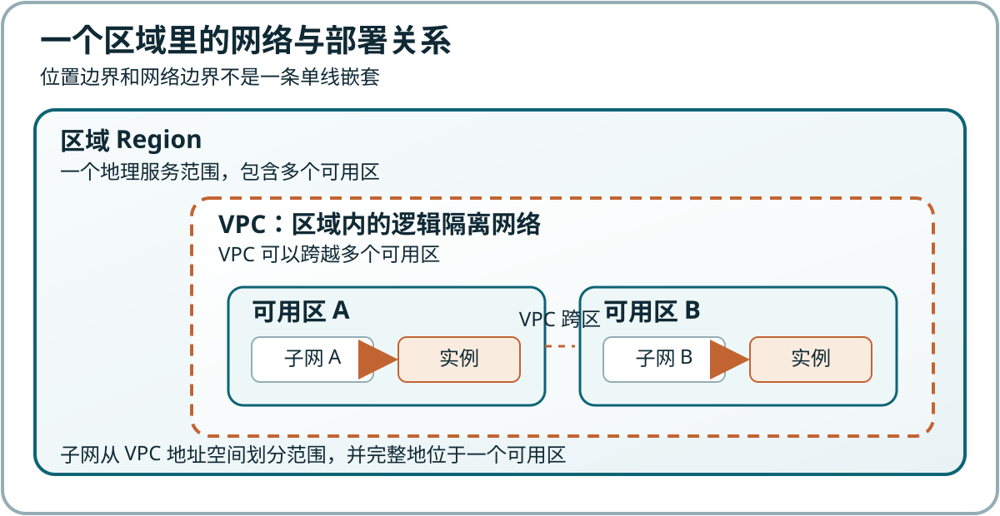

提供商建设
云服务提供商建设并运营数据中心、物理设备和云平台
申请、验证和回收计算资源
 VER. 2608
Built with impress.js
VER. 2608
Built with impress.js
你能沿着申请、访问、验证、监控和回收，解释公有云如何提供计算能力
用户按需获得计算等资源，不必自建底层物理基础设施
云服务提供商建设并运营数据中心、物理设备和云平台
外部用户通过控制台、命令行或应用程序接口 API 申请所需资源
实例等资源可按服务规则创建、调整、停止或释放，平台记录使用量
公有云把计算资源标准化供给，并支持计量和回收
公有云看资源由谁提供、面向谁开放；IaaS 看用户获得哪一层能力
| 观察维度 | 公有云 | 基础设施即服务 IaaS |
|---|---|---|
| 回答的问题 | 谁建设资源，资源面向谁开放 | 用户获得计算、存储和网络等哪一层能力 |
| 典型判断 | 外部用户可以按需使用提供商资源池 | 用户通常还要管理虚拟机、操作系统和应用 |
| 不能直接推出 | 不等于所有服务层都由用户管理 | 不单独说明资源是否面向公众开放 |
公有云中的云服务器可以属于 IaaS 服务，但两者回答的是不同分类问题
但宿主机位置、管理入口和计量方式不同
运行在自己控制的宿主机上
用户同时管理物理设备、虚拟化软件和虚拟机内的操作系统
机制观察、系统测试和本地隔离环境
运行在提供商的数据中心和资源池中
用户申请资源，并管理实例内的操作系统与应用
在线服务、临时任务和需要快速获得资源的场景
公有云改变的是资源供给方式与管理责任边界
| 场景 | 请先判断 | 需要找到的证据 |
|---|---|---|
| 在笔记本上运行 VMware 虚拟机 | 公有云／非公有云／证据不足 | 它是否由外部服务商的共享资源池按需供给？ |
| 远程登录实验室服务器 | 公有云／非公有云／证据不足 | 是否有资源池、按需、计量和回收证据？ |
| 在云平台申请一台按量计费实例 | 公有云／非公有云／证据不足 | 是否有面向外部用户的标准服务、资源池、按需、计量和回收证据？ |
| 租用机房中的长期独占物理服务器 | 公有云／非公有云／证据不足 | 哪些特征已证实，哪些仍待核对？ |
服务层次和具体服务边界决定双方各自管理哪些对象
建设和运行数据中心、物理设备、底层网络与云平台
维护资源池，让租户获得可用资源
让租户能够申请、计量和回收云资源
选择实例与网络，管理身份凭证、实例内操作系统、应用和数据
控制资源何时运行与释放
保证配置、访问、数据与费用符合任务需要
租户不必自建底层设施，但仍要对配置、安全、数据和费用负责
平台提供底层能力，实际结果还取决于配置、负载与管理
| 常见说法 | 平台提供的能力 | 用户必须补上的条件 |
|---|---|---|
| 成本较低 | 免去部分前期采购并支持按量使用 | 选择规格、时长；清理残留资源 |
| 快速弹性 | 资源可以扩展、缩减或重新组合 | 配置监控、策略和相应服务 |
| 安全可靠 | 提供基础设施保护、隔离和安全工具 | 收紧访问、维护系统并设计数据恢复 |
| 使用便捷 | 通过标准入口快速申请资源 | 理解每项配置的影响与费用 |
云服务优势取决于配置是否合适、管理是否到位
| 问题 | 先判断责任 | 先定位对象 |
|---|---|---|
| 底层设施故障（供电／物理硬盘） | 提供商／租户／待核对 | 机房供电或物理磁盘，谁维护？ |
| 安全组开放管理端口 | 提供商／租户／待核对 | 谁配置规则，谁能改变？ |
| 实例内操作系统未安装补丁 | 提供商／租户／待核对 | 物理设施、云平台还是实例内操作系统？ |
| 应用数据无备份 | 提供商／租户／待核对 | 数据保护与恢复由谁负责？ |
先定位故障对象，再按服务边界判断谁管理它
区域划定地理服务范围，可用区划分其中的故障边界
位置：区域 → 可用区
网络：VPC 可跨多个可用区；子网通常位于一个可用区；实例部署在子网中
影响时延、数据位置、产品可用性和跨区通信
先看主要用户、设备与数据要求
区域内相对独立的供电、网络和基础设施单元
关注资源依赖与故障隔离

| 任务约束 | 位置判断 | 核查证据 |
|---|---|---|
| 主要用户集中在华东 | 区域／可用区／两者 | 时延与网络路径 |
| 数据须在指定地理范围 | 区域／可用区／两者 | 数据位置与合规 |
| 抵御机房级故障 | 区域／可用区／两者 | 隔离边界与应用冗余 |
| GPU 规格仅部分位置可用 | 区域／可用区／两者 | 产品与库存 |
先写出不可违反的约束，再选择区域和可用区
多个可用区只提供故障隔离条件，还要让计算、数据和访问路径能够切换
多个可用区都要有能够接替工作的实例
业务数据需要复制、同步或可靠恢复
用户请求需要被重新分配到仍可用的资源
即使所在区域有多个可用区，只有一台实例仍是单点
可用区只是条件，高可用还需要计算、数据和访问路径都能切换
VPC 通常覆盖一个区域；子网通常位于一个可用区，实例部署在子网中
区域和可用区说明资源位置及基础设施故障边界
VPC 在一个区域内划定逻辑隔离网络，可跨多个可用区
子网从 VPC 划分地址范围，通常位于一个可用区
实例通过网卡连接子网，并使用私有 IP 地址通信
区域、可用区、VPC 和子网不能互相替代
VPC 和子网组织网络范围与实例位置，安全组控制到达实例的流量
建立租户私有网络范围和逻辑隔离边界
规定私有网络可用地址范围，便于规划并避免网段冲突
从 VPC 划分网络段，实例部署在其中
实例在云内通信使用的私有地址，不能直接作为互联网入口
按方向、来源地址和端口控制流量；放行不等于服务启动
VPC 划定网络边界，子网划分地址范围，安全组决定哪些流量可以通过
公网入口、网络规则和系统服务共同决定能否到达服务，凭证决定能否登录
电脑 → 公网入口 → 路由或网关 → 安全组 → 实例网卡 → 系统服务
提供互联网可寻址入口，并接入通往实例的网络路径
按方向、来源和端口决定哪些流量可以通过
SSH 服务、Web 服务等必须运行并监听相应端口
公网入口提供可寻址路径，规则决定放行，服务与凭证决定能否登录
当前连接的是否为目标实例的公网入口？
安全组是否放行当前来源的 SSH 端口？
SSH 服务是否运行并监听端口？
用户名和密钥／密码是否与目标实例匹配？
“运行中”只证明云平台已启动计算资源
实例规格、镜像、云硬盘和云网络分别承担不同作用
决定虚拟 CPU、内存和计算性能
提供实例操作系统或预装环境的初始状态
保存系统与业务数据，通常具有独立容量和生命周期
提供私有地址，并可配置公网入口、带宽和访问范围
云服务实例需要组合可配置、可计量且生命周期不同的资源
先满足任务约束，再比较性能、成本与恢复能力
软件、并发与性能 → CPU、内存和镜像
数据量、读写与恢复 → 磁盘和备份
谁访问、从哪里访问、使用什么协议 → 私有连接、公网入口和访问规则
时长与可预测性 → 计费方式
可重算任务通常能容忍中断；在线服务通常需要连续运行
在创建前列出关联资源和释放条件
| 任务 | 请提出配置取舍 | 需要说明的失败与生命周期约束 |
|---|---|---|
| 两小时的 Linux 测试 | 规格、镜像、网络和是否需要公网入口 | 运行时长、暴露面、课后释放 |
| 持续一学期的网站 | 计算、数据保护和访问方式 | 持续成本、可用性和恢复方案 |
| 允许失败后重算的批处理 | 计算资源、数据保存和访问方式 | 可接受的中断、重算条件和结果保存 |
选择云资源时，要考虑性能、数据、访问、持续时间和失败后果
演示沿着资源申请、访问、计量和回收展开
核对账号、权限与费用限制
选择平台、区域、最小规格和当前计费规则
使用所需密钥或强密码
保留已验证实例的截图
记录实例、磁盘、公网入口和其他关联资源
创建表单要求确定位置、实例、网络、访问和费用
根据用户、数据和故障约束选择区域与可用区
把实例放入 VPC 的子网，并选择合适的安全组
确定规格、镜像、磁盘和登录凭证
按需要配置公网入口和最小访问规则
确认计费方式、关联资源与释放行为
公网入口、规则、服务和凭证齐全，SSH 才能成功
01
02
03
04ssh <user>@<public-ip>
hostname
hostname -I
uname -a记录状态、私有 IP 和公网入口
SSH 登录并确认目标实例
查看主机名、地址和系统信息
区分运行、登录和应用可用性
SSH 成功只证明系统登录，不等于应用可用
监控指标要结合任务需求，才能判断是否调整资源
查看平台提供的 CPU、内存、磁盘、网络和实例状态
结合任务负载判断高使用率、低使用率或短时波动
根据证据变更规格、磁盘或相关服务，并核查停机和费用影响
重装、切换系统或删除前确认系统盘、数据盘和恢复路径
弹性来自可观察、可调整和可恢复的管理能力，不是盲目增加规格
| 当前状态 | 是否完成回收 | 还要核对 |
|---|---|---|
| 只关 SSH 终端 | 是／否／待核对 | 实例、磁盘、公网 IP 等关联资源 |
| 操作系统已关机 | 是／否／待核对 | 云平台实例、磁盘、公网 IP |
| 实例已删除 | 是／否／待核对 | 云硬盘、公网 IP、快照等 |
| 清单归零并核对费用 | 是／否／待核对 | 操作与费用记录 |
用后回收必须核对完整资源清单
公有云的申请、访问、计量和回收行为体现云计算的基本特征
| 云计算特征 | 本次操作中的证据 |
|---|---|
| 按需自助服务 | 用户通过标准入口自行申请与释放资源 |
| 广泛网络访问 | 用户通过网络访问控制台、实例和应用 |
| 资源池化 | 提供商从共享基础设施中分配逻辑资源 |
| 快速弹性 | 规格与资源数量可以根据需求调整 |
| 可计量服务 | 平台记录资源用量并形成费用 |
要用证据说明资源如何被供给、访问、计量和回收
实例规格、镜像、磁盘和网络可以随需求改变
用户不必淘汰整套物理设备才能获得新的逻辑资源
资源能够被重新创建，但软件与数据必须有可恢复的来源
更高规格意味着新的费用，软件与数据仍需迁移和维护
平台、区域、产品和配额也会变化
系统更新、应用安全、数据保护和成本管理不会自动完成
公有云提供可调整的资源服务，但仍需管理资源并承担费用
要合理使用云资源，必须说清责任、位置、网络、配置与生命周期